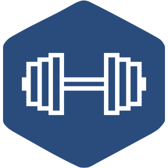

Welcome to wger 2.3 documentation
{kind=link}
wger (ˈvɛɡɐ) is a free, open-source web application that helps you manage your personal workouts, weight, and diet plans and can also be used as a simple gym management utility. It offers a REST API as well, for easy integration with other projects and tools.
For more details and a live system, refer to the project’s site: https://github.com/wger-project
This documentation is intended for developers and administrators of the software.
Installation (production)
- Docker compose
Recommended setup to run the application in a production environment, uses Docker and Docker Compose.
- Manual installation
“Manual” installation of the application in a production environment.
Development
- Backend
For developers who want to work on the backend / django part of the application (note that this is the main part of the application and also does parts of the frontend)
- Frontend
For developers who want to work on the frontend part of the application
- Mobile App
For developers who want to work on the mobile app part of the application
Administration
API
- Using the API
For developers who want to use the API, and it contains information about the API endpoints.
- Using the routine API
The data model used for the flexible routines and how to create and read them over the API.
Contact
Feel free to contact us if you found this useful or if there was something that didn’t behave as you expected (in this case you can also open a ticket on the issue tracker).
Mastodon: https://fosstodon.org/@wger
Discord: https://discord.gg/rPWFv6W
Issue tracker: https://github.com/wger-project/wger/issues
Sources
All the code and the content is freely available and is hosted on GitHub: https://github.com/wger-project
Licence
The application is licenced under the Affero GNU General Public License 3 or at your choice any later version (AGPL 3+).
The initial exercise and ingredient data is licensed additionally under a Creative Commons Attribution Share-Alike 3.0 (CC-BY-SA 3.0)
The documentation is released under a CC-BY-SA either version 4 of the License, or (at your option) any later version.
Some images were taken from Wikipedia, see the SOURCES file in their respective folders for more details.